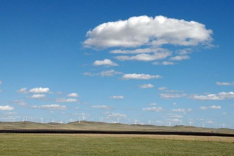

内蒙古·乌兰布统 · 2015.08.08 – 2015.08.09
乌兰布统天下最美
出差因为强台风延期了，经常感觉该出门的时间是命中注定的，就算未成行待在家也不自在……前年错过了元上都的金莲花，听说乌兰布统也有，心里一直痒痒，赤峰的朋友说立秋之后草马上就会黄了，周六吃过午饭，说走就走……没有做任何准备，旅行中的种种不确定才…
32 张照片 →
内蒙古·元上都 · 2013.08.17 – 2013.08.18
元上都：上都之北方有孤城
野花开满了坡 掩了残垣 闪电河畔 是谁正迎面而来 铁骑向南风向北 吹散 金莲川上的可汗 就在正散去的瞬间 马背上的男人回头一望 深情啊 铁骑也带了花香 这个瞬间凝了好多年 孤城，目光 是什么在心中荡漾 青青的草浪…
11 张照片 →